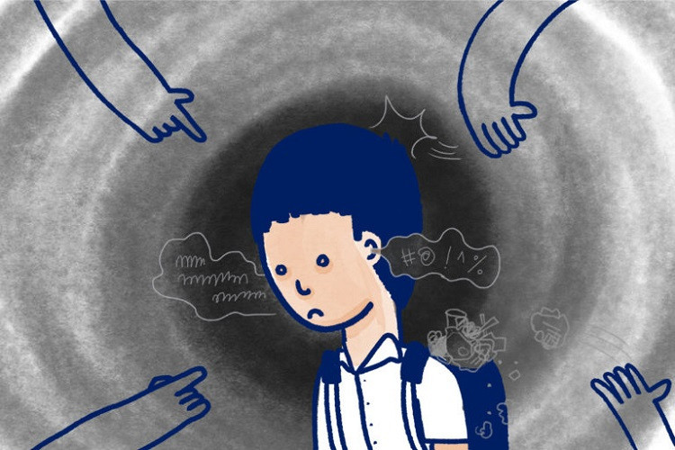
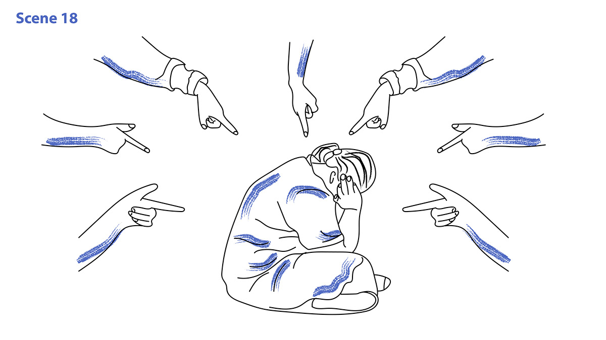

บูลลี่ (Bully) คืออะไร?
การกลั่นแกล้งที่แสดงออกด้วยคำพูด หรือ พฤติกรรมที่ก้าวร้าวต่อผู้อื่น ซึ่งมักเกิดขึ้นในสังคมที่มีช่องว่างระหว่างผู้ที่มีพละกำลัง หรืออำนาจมากกว่าแสดงออกแก่ผู้ที่อ่อนแอกว่า และมีโอกาสเกิดขึ้นซ้ำๆ โดยพบการบูลลี่ในโรงเรียน และในที่ทำงานมาก นำไปสู่ปัญหาสภาพทางจิตใจ ที่ร้ายแรงได้ในอนาคต
ลักษณะการบูลลี่ในโลกที่เกิดขึ้นเป็นประจำ ประกอบด้วย 2 เงื่อนไขต่อไปนี้
1. การใช้กำลังกลั่นแกล้ง ด้วยการแสดงออกจากกลุ่มเด็กที่มีอำนาจ หรือมีพละกำลังที่แข็งแรง ด้วยการใช้กำลังทำให้ผู้อื่นเกิดความรู้สึกอับอายในที่สาธารณะ ด้วยการกลั่นแกล้งที่เปลี่ยนแปลงตามสถานการณ์ได้ตลอดเวลา
2. เกิดขึ้นซ้ำ ด้วยพฤติกรรมกลั่นแกล้งที่มีโอกาสเกิดขึ้นมากกว่า 1 ครั้ง
การกลั่นแกล้งที่เกิดขึ้นรวมการกระทำทางร่างกาย และการข่มขู่ รวมถึงการปล่อยข่าวลือทางวาจาและใน Social Media
บูลลี่มีกี่ประเภท
การบูลลี่มี 3 ประเภท ดังนี้
- การกลั่นแกล้งทางวาจา (Verbal Bullying) คือ การสื่อสาร เขียน เพื่อสื่อความหมายกลั่นแกล้ง เช่น ล้อเล่น, เรียกชื่อ, แสดงความคิดเห็นทางเพศที่ไม่เหมาะสม, เหน็บแนม และขู่ว่าจะทำอันตราย
- การกลั่นแกล้งทางสังคม (Social Bullying) คือ วิธีการทำให้เสียหน้า หรือแกล้งให้สูญเสียความสัมพันธ์กับผู้อื่น อย่างตั้งใจ เช่น ขับเพื่อนออกจากกลุ่ม, กระจายข่าวลือให้เสียหาย, กีดกันไม่ให้เป็นเพื่อนกัน, ทำให้เกิดความอับอายในที่สาธารณะ
- การกลั่นแกล้งทางกายภาพ (Physical Bullying) คือ การกลั่นแกล้งที่เกี่ยวข้องกับร่างกายและสวัสดิภาพของผู้ถูกกลั่นแกล้ง เช่น การทุบตี ทำร้าย ทำให้สะดุด แย่งสิ่งของ แสดงออกทำท่าทางหยาบคายใส่
- สถานที่และเหตุการณ์แบบไหนที่มักจะเกิดเหตุการณ์บูลลี่
- การกลั่นแกล้งมักเกิดขึ้นที่โรงเรียน ในเวลาหลักเลิกเรียน ไม่ว่าจะเป็น สนามเด็กเล่น, สนามบาส, ลานอเนกประสงค์ หรือเส้นทางกลับบ้านของนักเรียน การกลั่นแกล้งบูลลี่ มักนำไปสู่ปัญหาอาชญากรรม เช่น การกรรโชกทรัพย์ ผู้ตกเป็นเหยื่อมักเป็นเด็กอายุ 12 - 18 ปี
 |
 |  |